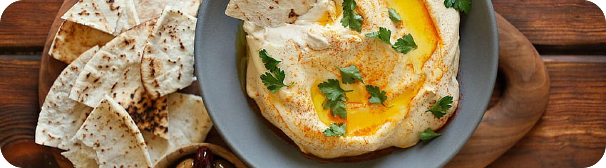

GREECE
Hummus

- 250 gr kacang arab
- 150 ml tahini
- 1 sdm sari lemon
- 1 liter air
- Garam
- 1/2 sdt jintan bubuk
- 1/2 sdt paprika bubuk
- 3 sdm minyak zaitun
- 1 sdm peterseli, cincang kasar
- 1 buah lemon, peras sarinya
- 1/2 buah cabai hijau, cincang kasar
- Rendam kacang arab dengan air hingga seluruh kacang terendam dan biarkan semalaman.
- Letakkan panci berisi air di atas kompor, tuangkan kacang yang sudah direndam ke dalamnya. Setelah itu, tambahkan lagi sedikit air dan masak kacang dengan api besar. Saat memasak kacang, Anda akan menyadari munculnya busa di permukaan air. Buang busa tersebut. Setelah itu, kecilkan api, tutup panci, dan masak kembali kacang selama 1,5 jam. Meski panci ditutup, pastikan Anda menyisakan sedikit celah untuk mengeluarkan uap panas yang terbentuk selagi kacang dimasak. Jika air menyusut tetapi kacang belum matang, tambahkan air kembali. Kacang yang sudah matang seharusnya akan bertekstur empuk, lembut, dan mudah dihancurkan dengan sendok.
- Masukkan dua sendok penuh kacang ke dalam mangkuk, sisihkan. Setelah itu, masukkan sisa kacang ke dalam blender dan proses hingga teksturnya menyerupai pasta yang lembut, kental, dan tidak menggumpal. Ulangi proses tersebut sampai kacang habis. Setelah itu, pindahkan pasta kacang ke dalam mangkuk.
- Bumbui Hummus dengan perasan lemon, tahini dan garam.
- Ambil kacang yang tadi disisihkan, dan tambahkan bubuk paprika, bubuk jintan, 1 sdm. sari lemon, minyak zaitun, cincangan cabai hijau, cincangan peterseli, dan sedikit garam. Lalu aduk hingga rata.
- Lalu letakan dua sendok besar hummus ke piring saji. Taruhlah bumbu barusan di atas hummus tersebut.